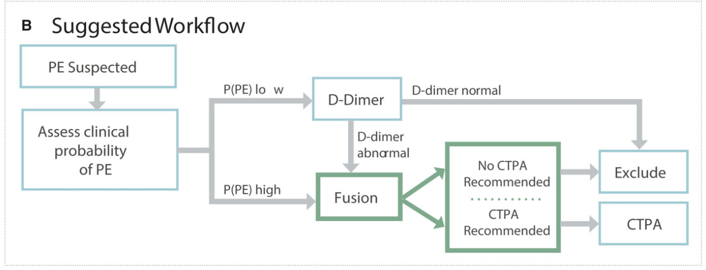

Literature Review
Pulmonary Embolism Prediction using CXR Imaging and EKGs (PEPCEI)
Somani et al. (2022) Paper (Mount Sinai)
Development of a machine learning model using electrocardiogram signals to improve acute PE screening.
The CTPA Overuse Problem
- Pulmonary emboli (PE) = blood clots in lung arteries
- Potentially life-threatening condition (2-9% of out-of-hospital cardiac arrests)
- CTPA required for definitive diagnosis but not always immediately available
- Only 3-10% of ordered CTPAs are positive for PE
- Overuse exposes patients to unnecessary radiation
Study Design
- Large-scale retrospective cohort study at Mount Sinai Health System
- Novel approach: Combining ECG waveform analysis with clinical data
- Study Population & Data
- 21,183 patients who underwent CTPA evaluation
- 23,793 CTPAs (10.0% PE-positive)
- 320,746 ECGs linked to clinical information
ML Models
3 Approaches
- ECG Model: Convolutional neural network (CNN)
- Analyzes raw waveform data from 8 ECG leads
- 12 residual blocks + fully-connected output layer
- EHR data Model: XGBoost algorithm
- Uses clinical data (demographics, comorbidities, vitals, labs)
- Includes ECG morphology parameters (PR interval, QTc, etc.)
- Fusion Model:
- Combines ECG waveform embeddings with clinical EHR data
- Uses principal component analysis to reduce dimensionality
- Built on XGBoost framework
Model Performance
- Fusion model significantly outperformed others:
- Fusion model: AUC 0.81 ± 0.01
- EHR model: AUC 0.65 ± 0.01
- ECG model: AUC 0.59 ± 0.01
- Fusion model benchmarked against standard scoring systems:
- Wells’ Criteria (AUC 0.54); Revised Geneva Score (AUC 0.52)
- PERC (AUC 0.50); 4PEPS (AUC 0.58)
- Fusion model achieved higher specificity (0.18) vs. clinical scores (0.00-0.05)
- Better performance maintained even without D-dimer input
Workflow of Somani et al.

Workflow
Case Study: 53-year-old male with saddle PE. Clinical presentation:
Chest pain, fatigue, dyspnea on exertion Tachycardia (HR 123) but no hypoxia, Elevated D-dimer (13.7 mg/mL).
Low scores on clinical assessment tools: Wells’ criteria: 1.5; Geneva score: 5; PERC: 2; 4PEPS: 1.
All AI models correctly identified the subject as high risk!
Silva et al. (2023) Paper (Portugal)
Artificial intelligence-based diagnosis of acute pulmonary embolism: Development of a machine learning model using 12-lead electrocardiogram.
Current Approach Limitations:
- Clinical prediction rules + D-dimer tests:
- Wells score, Geneva score, YEARS algorithm, PEGeD algorithm
- High sensitivity (~90%) but poor specificity (12-30%)
- Traditional ECG features unreliable for PE detection
- Risk of unnecessary anticoagulation/thrombolysis
Study Design
- 1,014 ECGs from emergency department patients
- All underwent CTPA for suspected PE
- 911 ECGs for model development (training)
- 103 ECGs for validation (testing)
- Gold standard: CTPA results
- Compared AI performance vs. standard clinical prediction rules
AI Model and Results
AI Model Architecture
- Attention-Enhanced Residual Network
- Processes raw 12-lead ECG data (5000 samples/10 seconds)
- Pre-processing: low-pass filter + Z-score normalization
- Focal loss function to address class imbalance
- Self-multi-head attention mechanism for detailed pattern recognition
Key Results
- AI-ECG model:
- 100% specificity (95% CI: 94-100%)
- 50% sensitivity (95% CI: 33-67%)
- AUC: 0.75 (95% CI: 0.66-0.82)
- Traditional clinical prediction rules:
- ~90% sensitivity
- 12-30% specificity
- AUC: 0.51-0.59 (near-random performance)
Interesting Finding: ECG vs PE
- Traditional ECG features showed no statistical difference between patients with and without PE!
- Specific patterns like tachycardia, right bundle branch block, S1Q3T3 pattern, and T-wave inversions appeared similarly in both groups
- Even the established Daniels’ ECG score showed no significant difference between PE and non-PE patients
- Despite this, the AI model achieved 100% specificity in detecting PE from the same ECG data, which suggests
- AI identified subtle, complex patterns that aren’t part of conventional medical knowledge.
- Hypothesis: Could augmenting CXR with EKG have merit in predicting PE?
Abstract (Houghton et al., 2024, Mayo Clinic)
The AI-Mayo PE (AIM PE) Study: Validation of an Artificial Intelligence Algorithm Using Electrocardiograms to Predict Pulmonary Emboli
Background: The PE Diagnosis Challenge
- CTPA required for definitive diagnosis but not always immediately available
- Especially challenging in hemodynamically unstable patients
- Current Approach: Limitations
- Existing algorithms have only moderate accuracy
- Guidelines recommend formal scoring systems (Wells’ Score, PERC etc)
- Reality: Many clinicians don’t consistently use them
- Heavy reliance on “clinical gestalt” (personal judgment)
- Risk of missed diagnoses or unnecessary testing
AI-ECG
The AI-ECG Approach
- Uses routinely collected data (ECGs are standard for cardiac symptoms)
- Key Innovation: Combined with D-dimer testing → AUC improved to 0.93
Study Results
- Validation using 18,936 emergency department patients
- AI-ECG algorithm maintained AUC of 0.69
- Three risk categories identified:
- Low risk: 0.74% PE rate (99.3% NPV)
- Elevated risk: 2.27% PE rate (97.7% NPV)
- High risk: 8.02% PE rate (92.0% NPV)
- Combined with D-dimer: AUC improved to 0.93
- D-dimer is a blood test that detects protein fragments present after a blood clot breaks down.
Comparison
Similarities
- All utilize ECG data as a core component
- All outperform traditional clinical prediction rules
- All aim to reduce unnecessary CTPA imaging
- All suggest AI can detect ECG patterns invisible to human clinicians
Differences
- Data Inputs:
- Mayo: Primarily ECG data + D-dimer
- Portuguese: ECG data only
- Mount Sinai: Most comprehensive (ECGs, demographics, EHR)
- Model Architecture:
- Portuguese: Attention-enhanced residual network
- Mount Sinai: Multiple architectures (CNN, XGBoost)
- Performance Focus:
- Portuguese: Maximized specificity (100%), Mediocre sensitivity (0.50)
- Mount Sinai: Poor specificity (0.18) (although better than clinical scores)
Why add CXR?
CXRs widely available and less resource-intensive than CTPA.
Complementary to EKG, routinely performed early in cardiopulmonary workups.
May show secondary PE signs (Westermark sign, Hampton’s hump). (Ask an expert!)
AI/ML models excel at image analysis/pattern recognition.
Challenges
- Variable CXR image quality (technique, positioning).
- Many other cardiopulmonary conditions could affect CXR appearance and introduce bias.
Questions
What variables do we have in addition to the CXR and EKG images?
Do we use the data directly or some engineered version (extract texture features/numeric values)? Or both?
Understanding the timing of when these variables were collected?
- What information do we collect for each patient and how and in what stages?
- MIMIC data jitters the timestamps.
Why did they do the D-dimer test? Is it not a definitive test? Why not just build a model with EKG+D-Dimer?
Suggestion:
- Build models sequentially, first start with EHR, then EKG, then EKG+EHR, then augment CXR and so on.
- Understanding variable importance: what variables are important?
References
[1] Somani SS, et al. Development of a machine learning model using electrocardiogram signals to improve acute pulmonary embolism screening. European Heart Journal - Digital Health. 2022;3:56-66.
[2] Valente Silva B, et al. Artificial intelligence-based diagnosis of acute pulmonary embolism: Development of a machine learning model using 12-lead electrocardiogram. Revista Portuguesa de Cardiologia. 2023;42(8):643-651.
[3] Houghton DE, et al. The AI-Mayo PE Study: Validation of an Artificial Intelligence Algorithm Using Electrocardiograms to Predict Pulmonary Emboli. [2024]